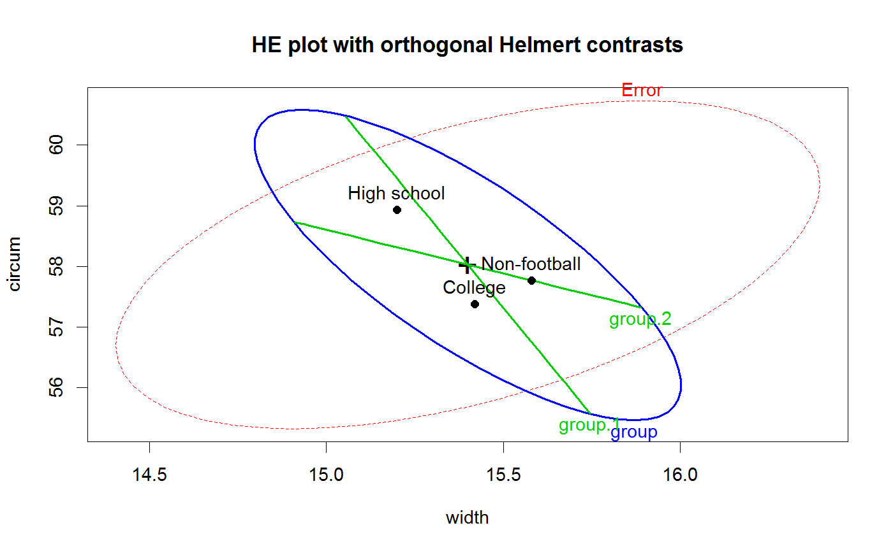
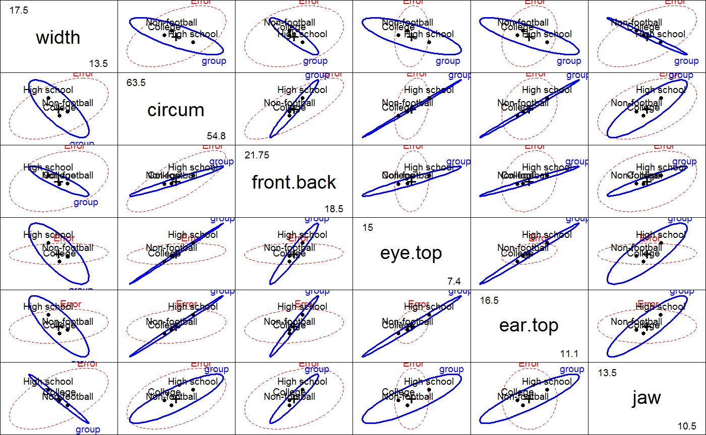
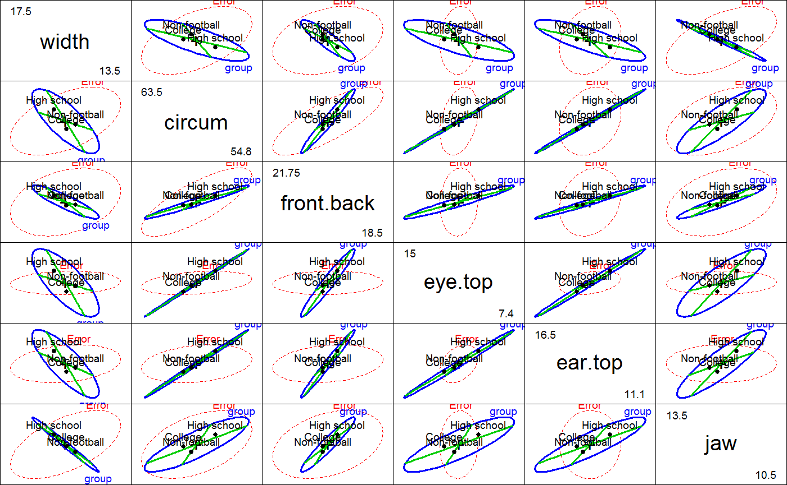

<!-- Generated by pkgdown: do not edit by hand -->
<!DOCTYPE html>
<html>
  <head>
  <meta charset="utf-8">
<meta http-equiv="X-UA-Compatible" content="IE=edge">
<meta name="viewport" content="width=device-width, initial-scale=1.0">

<title>Head measurements of football players — FootHead • heplots</title>

<!-- jquery -->
<script src="https://code.jquery.com/jquery-3.1.0.min.js" integrity="sha384-nrOSfDHtoPMzJHjVTdCopGqIqeYETSXhZDFyniQ8ZHcVy08QesyHcnOUpMpqnmWq" crossorigin="anonymous"></script>
<!-- Bootstrap -->
<link href="https://maxcdn.bootstrapcdn.com/bootswatch/3.3.7/cerulean/bootstrap.min.css" rel="stylesheet" crossorigin="anonymous">

<script src="https://maxcdn.bootstrapcdn.com/bootstrap/3.3.7/js/bootstrap.min.js" integrity="sha384-Tc5IQib027qvyjSMfHjOMaLkfuWVxZxUPnCJA7l2mCWNIpG9mGCD8wGNIcPD7Txa" crossorigin="anonymous"></script>

<!-- Font Awesome icons -->
<link href="https://maxcdn.bootstrapcdn.com/font-awesome/4.6.3/css/font-awesome.min.css" rel="stylesheet" integrity="sha384-T8Gy5hrqNKT+hzMclPo118YTQO6cYprQmhrYwIiQ/3axmI1hQomh7Ud2hPOy8SP1" crossorigin="anonymous">


<!-- pkgdown -->
<link href="../pkgdown.css" rel="stylesheet">
<script src="../jquery.sticky-kit.min.js"></script>
<script src="../pkgdown.js"></script>
  
  
<!-- mathjax -->
<script src='https://mathjax.rstudio.com/latest/MathJax.js?config=TeX-AMS-MML_HTMLorMML'></script>

<!--[if lt IE 9]>
<script src="https://oss.maxcdn.com/html5shiv/3.7.3/html5shiv.min.js"></script>
<script src="https://oss.maxcdn.com/respond/1.4.2/respond.min.js"></script>
<![endif]-->


  </head>

  <body>
    <div class="container template-reference-topic">
      <header>
      <div class="navbar navbar-default navbar-fixed-top" role="navigation">
  <div class="container">
    <div class="navbar-header">
      <button type="button" class="navbar-toggle collapsed" data-toggle="collapse" data-target="#navbar">
        <span class="icon-bar"></span>
        <span class="icon-bar"></span>
        <span class="icon-bar"></span>
      </button>
      <a class="navbar-brand" href="../index.html">heplots</a>
    </div>
    <div id="navbar" class="navbar-collapse collapse">
      <ul class="nav navbar-nav">
        <li>
  <a href="../index.html">
    <span class="fa fa-home fa-lg"></span>
     
  </a>
</li>
<li>
  <a href="../reference/index.html">Reference</a>
</li>
      </ul>
      
      <ul class="nav navbar-nav navbar-right">
        
      </ul>
    </div><!--/.nav-collapse -->
  </div><!--/.container -->
</div><!--/.navbar -->

      
      </header>

      <div class="row">
  <div class="col-md-9 contents">
    <div class="page-header">
    <h1>Head measurements of football players</h1>
    </div>

    
    <p>Data collected as part of a preliminary study examining the
relation between football helmet design and neck injuries.
There are 30 subjects in each of three groups:
High school football players, college players and non-football players.</p>
    

    <pre class="usage"><span class='fu'>data</span>(<span class='no'>FootHead</span>)</pre>
        
    <h2 class="hasAnchor" id="format"><a class="anchor" href="#format"></a>Format</h2>

    <p>A data frame with 90 observations on the following 7 variables.</p><dl class='dl-horizontal'>
    <dt><code>group</code></dt><dd><p>a factor with levels <code>High school</code> <code>College</code> <code>Non-football</code></p></dd>
    <dt><code>width</code></dt><dd><p>a numeric vector: head width at widest dimension</p></dd>
    <dt><code>circum</code></dt><dd><p>a numeric vector: head circumference</p></dd>
    <dt><code>front.back</code></dt><dd><p>a numeric vector: front to back distance at eye level</p></dd>
    <dt><code>eye.top</code></dt><dd><p>a numeric vector: eye to top of head</p></dd>
    <dt><code>ear.top</code></dt><dd><p>a numeric vector:ear to top of head</p></dd>
    <dt><code>jaw</code></dt><dd><p>a numeric vector: jaw width</p></dd>
  </dl>
    
    <h2 class="hasAnchor" id="source"><a class="anchor" href="#source"></a>Source</h2>

    <p>Rencher, A. C. (1995), <em>Methods of Multivariate Analysis</em>,
New York: Wiley, Table 8.3.</p>
    

    <h2 class="hasAnchor" id="examples"><a class="anchor" href="#examples"></a>Examples</h2>
    <pre class="examples"><div class='input'><span class='fu'>data</span>(<span class='no'>FootHead</span>)
<span class='fu'>str</span>(<span class='no'>FootHead</span>)</div><div class='output co'>#&gt; 'data.frame':	90 obs. of  7 variables:
#&gt;  $ group     : Factor w/ 3 levels "High school",..: 1 1 1 1 1 1 1 1 1 1 ...
#&gt;  $ width     : num  13.5 15.5 14.5 15.5 14.5 14 15 15 15.5 15.5 ...
#&gt;  $ circum    : num  57.1 58.4 55.9 58.4 58.4 ...
#&gt;  $ front.back: num  19.5 21 19 20 20 21 19.5 21 20.5 20.5 ...
#&gt;  $ eye.top   : num  12.5 12 10 13.5 13 12 13.5 13 13.5 13 ...
#&gt;  $ ear.top   : num  14 16 13 15 15.5 14 15.5 14 14.5 15 ...
#&gt;  $ jaw       : num  11 12 12 12 12 13 13 13 12.5 13 ...</div><div class='input'><span class='fu'>require</span>(<span class='no'>car</span>)

<span class='co'># use Helmert contrasts for group</span>
<span class='fu'>contrasts</span>(<span class='no'>FootHead</span>$<span class='no'>group</span>) <span class='kw'>&lt;-</span> <span class='no'>contr.helmert</span>
<span class='fu'>contrasts</span>(<span class='no'>FootHead</span>$<span class='no'>group</span>)</div><div class='output co'>#&gt;              [,1] [,2]
#&gt; High school    -1   -1
#&gt; College         1   -1
#&gt; Non-football    0    2</div><div class='input'>
<span class='no'>foot.mod</span> <span class='kw'>&lt;-</span> <span class='fu'>lm</span>(<span class='fu'>cbind</span>(<span class='no'>width</span>, <span class='no'>circum</span>,<span class='no'>front.back</span>,<span class='no'>eye.top</span>,<span class='no'>ear.top</span>,<span class='no'>jaw</span>)~<span class='no'>group</span>, <span class='kw'>data</span><span class='kw'>=</span><span class='no'>FootHead</span>)
<span class='fu'><a href='http://www.rdocumentation.org/packages/car/topics/Anova'>Manova</a></span>(<span class='no'>foot.mod</span>)</div><div class='output co'>#&gt; 
#&gt; Type II MANOVA Tests: Pillai test statistic
#&gt;       Df test stat approx F num Df den Df    Pr(&gt;F)    
#&gt; group  2   0.76116   8.4994     12    166 1.876e-12 ***
#&gt; ---
#&gt; Signif. codes:  0 <U+0091>***<U+0092> 0.001 <U+0091>**<U+0092> 0.01 <U+0091>*<U+0092> 0.05 <U+0091>.<U+0092> 0.1 <U+0091> <U+0092> 1</div><div class='input'>
<span class='co'># show the HE plot for the first two variables</span>
<span class='fu'><a href='heplot.html'>heplot</a></span>(<span class='no'>foot.mod</span>, <span class='kw'>main</span><span class='kw'>=</span><span class='st'>"HE plot for width and circumference"</span>, <span class='kw'>fill</span><span class='kw'>=</span><span class='fl'>TRUE</span>,
        <span class='kw'>col</span><span class='kw'>=</span><span class='fu'>c</span>(<span class='st'>"red"</span>, <span class='st'>"blue"</span>))</div><div class='img'></div><div class='input'>
<span class='co'># show it with tests of Helmert contrasts</span>
<span class='fu'><a href='heplot.html'>heplot</a></span>(<span class='no'>foot.mod</span>, <span class='kw'>hypotheses</span><span class='kw'>=</span><span class='fu'>list</span>(<span class='st'>"group.1"</span><span class='kw'>=</span><span class='st'>"group1"</span>,<span class='st'>"group.2"</span><span class='kw'>=</span><span class='st'>"group2"</span>),
        <span class='kw'>col</span><span class='kw'>=</span><span class='fu'>c</span>(<span class='st'>"red"</span>, <span class='st'>"blue"</span>, <span class='st'>"green3"</span>, <span class='st'>"green3"</span> ),
        <span class='kw'>main</span><span class='kw'>=</span><span class='st'>"HE plot with orthogonal Helmert contrasts"</span>)</div><div class='img'></div><div class='input'>
<span class='co'># show all pairwise HE plots</span>
<span class='fu'>pairs</span>(<span class='no'>foot.mod</span>)</div><div class='img'></div><div class='input'>
<span class='co'># ... with tests of Helmert contrasts</span>
<span class='fu'>pairs</span>(<span class='no'>foot.mod</span>, <span class='kw'>hypotheses</span><span class='kw'>=</span><span class='fu'>list</span>(<span class='st'>"group.1"</span><span class='kw'>=</span><span class='st'>"group1"</span>,<span class='st'>"group.2"</span><span class='kw'>=</span><span class='st'>"group2"</span>),
        <span class='kw'>col</span><span class='kw'>=</span><span class='fu'>c</span>(<span class='st'>"red"</span>, <span class='st'>"blue"</span>, <span class='st'>"green3"</span>, <span class='st'>"green3"</span>), <span class='kw'>hyp.labels</span><span class='kw'>=</span><span class='fl'>FALSE</span>)</div><div class='img'></div><div class='input'>
<span class='co'># see that the hypothesis for groups really is 2D</span>
<span class='fu'><a href='heplot3d.html'>heplot3d</a></span>(<span class='no'>foot.mod</span>, <span class='kw'>variables</span><span class='kw'>=</span><span class='fu'>c</span>(<span class='fl'>1</span>,<span class='fl'>2</span>,<span class='fl'>6</span>),
        <span class='kw'>hypotheses</span><span class='kw'>=</span><span class='fu'>list</span>(<span class='st'>"group.1"</span><span class='kw'>=</span><span class='st'>"group1"</span>,<span class='st'>"group.2"</span><span class='kw'>=</span><span class='st'>"group2"</span>),
        <span class='kw'>col</span><span class='kw'>=</span><span class='fu'>c</span>(<span class='st'>"red"</span>, <span class='st'>"blue"</span>, <span class='st'>"green3"</span>, <span class='st'>"green3"</span> ), <span class='kw'>wire</span><span class='kw'>=</span><span class='fl'>FALSE</span>)</div></pre>
  </div>
  <div class="col-md-3 hidden-xs hidden-sm" id="sidebar">
    <h2>Contents</h2>
    <ul class="nav nav-pills nav-stacked">
      
      <li><a href="#format">Format</a></li>

      <li><a href="#source">Source</a></li>
      
      <li><a href="#examples">Examples</a></li>
    </ul>

  </div>
</div>

      <footer>
      <div class="copyright">
  <p>Developed by John Fox, Michael Friendly.</p>
</div>

<div class="pkgdown">
  <p>Site built with <a href="http://hadley.github.io/pkgdown/">pkgdown</a>.</p>
</div>

      </footer>
   </div>

  </body>
</html>
